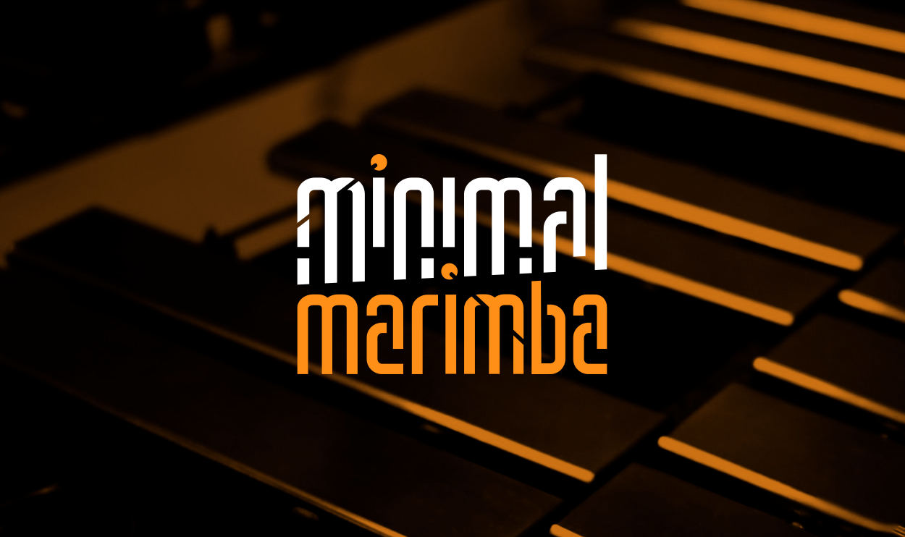

Qué es Minimal Marimba
Concepto, visión artística y los cuatro pilares sonoros: marimba solista, Meng-Âmok, orquestaciones e intervenciones.
Leer más →De la percusión clásica a la experimentación electrónica: una carrera construida sobre más de veinte años de formación, investigación y actuación.
Este sitio no es una galería de imágenes. Es un sistema de navegación patrimonial donde cada afirmación está respaldada por evidencia: programas, fotografías, certificados, videos y testimonios. El visitante puede recorrer cronológicamente la carrera de Cristóbal Zurita o entrar por ejes temáticos —formación académica, música popular, electrónica, personas clave— para comprender cómo todo desemboca en Minimal Marimba.
Cuatro formas de entrar a la misma historia

Concepto, visión artística y los cuatro pilares sonoros: marimba solista, Meng-Âmok, orquestaciones e intervenciones.
Leer más →
Percusionista clásico, baterista y creador sonoro. Biografía, enfoque y la red de maestros, colegas e instituciones que forman parte de su trayectoria.
Leer más →
Desde el Colegio Oratorio Don Bosco hasta CENTEX: una cronología de más de veinte años conectada con evidencia documental.
Ver cronología →
Universidad de Chile, Rythmus, Festival de Música Contemporánea, seminarios internacionales, música popular y las personas que marcaron el camino.
Explorar →Programas, afiches, certificados, fotografías y registros sonoros
Riders técnicos, formatos de presentación, especificaciones de equipo y requerimientos de montaje disponibles para descarga.